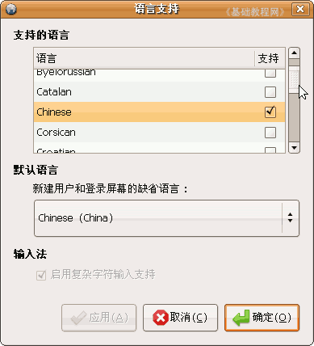
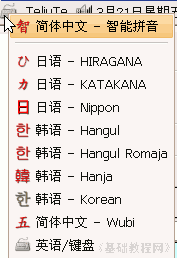
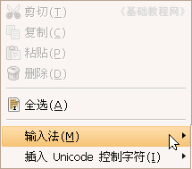
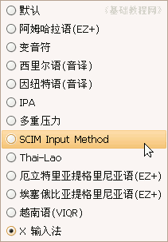

，点击即可选择各种输入
法；
，点击即可选择各种输入
法；SCIM输入法操作基础
一、安装SCIM 返回目录
在Ubuntu中，常用的中文输入法是SCIM输入法，里面有拼音、五笔等多种输入法，我们来学习一下安装的方法，下面我们来 看一个练习；
1、设置中文语言
1）安装好Ubuntu后，根据自己的连网，先设置好源，更新源列表后，就可以从网上下载语言包，如果是DVD光盘安装，可以直接设 置中文语言；
2）在桌面上边的面板栏菜单中依次选择：“System－administration －language support”，中文的意思是“系统－系统管理－语言支持”，出来一个对话框；
拖动右边的滚动条，找到字母C开头 的Chinese，打勾右边的小方框，在下面的列表框里面也选择Chinese(China)，
点下面的“OK”确定按钮，然后开始下载中文语言包，这儿要费一些时间，耐心等待；
3）安装完成后，重启系统，在上面板栏的右边，就有一个小键盘的图标，点击即可选择各种输入
法；

4）另外也可以在要输入的文本框里 面点右键，选择“输入法－SCIM”输入法；

本节学习了在Ubuntu中安装SCIM中文输入法的基本方法，如果你成功地完成了练习，请继续学习下一课内容；本教程由86团学校TeliuTe制作|著作权所有
基础教程网：http://teliute.org/
美丽的校园……
转载和引用本站内容，请保留作者和本站链接。